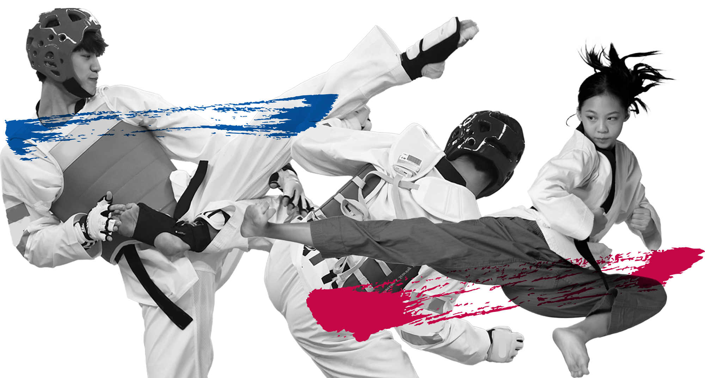

Firsthand Encounter with Taekwondo
As I stepped onto the mat for the first time, the scent of sweat and determination filled the air. Little did I know, this moment would mark the beginning of a transformative journey. Taekwondo, an ancient Korean martial art, has been my sanctuary, a place where I've discovered not only physical strength but also mental fortitude.
The first class was a mix of excitement and trepidation. The dojang, bathed in the warm glow of the setting sun, echoed with the rustling of uniforms and the low hum of conversation. I, clad in a crisp white uniform, stood among a diverse group of beginners, all eager to embark on this journey of self-discovery and discipline. Our instructor, radiated a sense of calm authority, reminding us that every black belt began as a white belt, devoid of knowledge or skill. It was a powerful lesson in humility, the first of many to come.
The first moments of stepping onto that mat were a sensory overload. The echo of feet shuffling, the focused expressions of my fellow beginners, and the palpable energy in the room were overwhelming. The feeling of wearing that crisp white uniform made me feel like a blank canvas, ready to be molded into something greater. It was a beginning, a fresh start, and a promise of transformation..